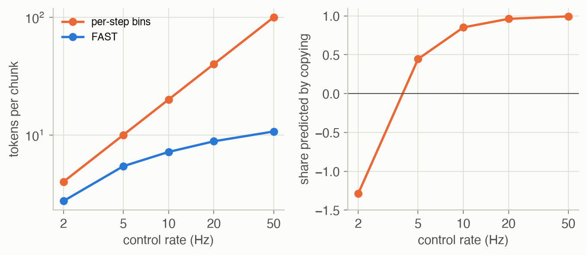

Week 7 · Sequence Modeling and Transformers
Lecture of 30 March 2026 · guest: Ted Xiao
Big picture
Where this week fits
Every policy so far has been reactive: one observation in, one action out ▶ 00:21. Week 3 cloned such policies from demonstrations, and Week 6 made their action distributions richer. This week asks what a policy gains by looking at a sequence: the history behind the current observation, and a whole stretch of future actions instead of one. The tool is the transformer, the architecture behind large language models (LLMs), vision-language models (VLMs) and, from Week 9 on, the vision-language-action models (VLAs) that the rest of the course builds on.
The question this week answers: how do you turn a robot’s observations, instructions and actions into one token sequence that a transformer can learn from, and what goes wrong with actions that does not go wrong with words?
The key ideas at a glance
- A snapshot is not enough. One camera frame shows neither how fast things move nor what the robot did a moment ago; a robot really acts in a partially observable world and needs history. Predicting one action at a time also tends to produce jerky motion.
- Sequences factor into conditionals. By the chain rule, any distribution over a sequence is a product of “next element given everything before”. An autoregressive model learns that one conditional.
- Attention instead of recurrence. A recurrent network squeezes the past into one state vector; attention lets every position look directly at every earlier one, in one step and in parallel. It has no sense of order, so positional encodings add it.
- Tokens. Text is split into sub-words by byte-pair encoding, images into patches; once everything is a token, one transformer can read both. Vision and language are joined by contrastive alignment (CLIP), by feeding image tokens into a language model (LLaVA, early fusion), by cross-attention (Flamingo, late fusion), or by training on all modalities at once.
- Scale. Transformers improve predictably with model size, data and compute; the Chinchilla rule says to grow model and data together, about 20 tokens per parameter.
- Actions as tokens. Bin each action dimension at each step (RT-2, OpenVLA). At high control rates consecutive tokens nearly repeat, and next-token prediction learns little; FAST compresses each action chunk with a discrete cosine transform first.
- Action chunks. Predict the next \(k\) actions at once (ACT) for smoother motion; a temporal ensemble averages overlapping chunks so the robot keeps reacting.
Vocabulary
| Term | Plain meaning |
|---|---|
| Reactive policy | Chooses each action from the current observation only |
| POMDP | A decision problem where the robot observes only part of the state |
| Autoregressive model | Generates a sequence one element at a time, each conditioned on all earlier ones |
| Token | One unit of a sequence: a sub-word, an image patch, an action bin |
| Attention | Each position takes a weighted average of other positions’ values, with weights from query-key similarity |
| Causal mask | Stops a position from attending to later positions |
| Positional encoding | Information about order added to tokens or to attention scores |
| Teacher forcing | Training on the true previous tokens, not the model’s own predictions |
| BPE | Byte-pair encoding: repeatedly merge the most frequent adjacent pair into a new token |
| Scaling law | A fitted power law linking loss to model size, data and compute |
| Early, late fusion | Image tokens enter the language model’s input sequence, or reach it through cross-attention layers |
| Action chunk | The next \(k\) actions, predicted together |
| Temporal ensemble | Averaging the overlapping predictions that several chunks make for the same step |
| DCT | Discrete cosine transform: a signal written as a sum of cosines of rising frequency |
After this week you can
- Explain why robots need history and why single-step policies jitter.
- Compute an attention head by hand, and say what the causal mask and positional encodings are for.
- Describe teacher forcing, and why a transformer trains on a whole sequence in one pass.
- Run byte-pair encoding, and explain how images and actions become tokens.
- State the Chinchilla rule and use \(C \approx 6ND\) to size a model for a compute budget.
- Explain why per-step action bins fail at high control rates, and how FAST’s compression fixes it.
- Compare single-step control, action chunks and temporal ensembling.
Intuition
TipAnalogy
Think of a pianist reading music. A beginner looks at one note, plays it, looks at the next: slow, and the phrasing is choppy. An experienced player reads a whole bar ahead and plays it as one gesture, while still glancing at what comes next and at the conductor. They also remember what they have just played: a repeat sign means something only if you know where you have been. Remembering the past is what attention gives a robot; playing a bar at a time is action chunking; still glancing at the page between bars is the temporal ensemble.
One snapshot is not enough
A reactive policy \(\pi(a_t \mid o_t)\) has two problems ▶ 00:21. The first is memory. A single frame does not show how fast a pedestrian is walking, or that the road was icy a few seconds ago. The second is smoothness: a policy that decides every step afresh can switch between slightly different decisions and produce jerky, oscillating motion ▶ 01:34. In the language of Week 2, the robot is not in an MDP but a partially observable one (a POMDP): the observation is not the state, and the state must be inferred from the history ▶ 02:22. The world produces a sequence, but the policy looks at one element of it ▶ 03:21.
This page’s first toy is that problem in its simplest form. A robot receives a stream of 16 tokens. Most are sensor readings with random values; twice, at random moments, a token announces a goal position, and the second announcement replaces the first (an operator corrects themselves). The last token asks: where should I go now? A reactive policy sees only that last token, which says nothing about the goal, so its best guess is 0, and its mean squared error is 1.00, the variance of the goal.
Sequences as products of conditionals
To model a whole sequence, use the chain rule of probability: any joint distribution, however complicated, is the probability of the first element, times that of the second given the first, and so on ▶ 03:53. A model that learns “next element given all earlier ones” can therefore represent any sequence distribution, and generate from it one element at a time. This is an autoregressive model (Equation 1). The hard part is the conditional itself: its input, the whole past, grows with the sequence and can be high-dimensional.
The first answer was the recurrent neural network (RNN): keep a hidden state that summarizes the past, and update it with each new input ▶ 04:56. It handles any length, but has three problems. Information from step 1 reaches step 100 only through 99 updates, so gradients over long ranges explode or vanish (LSTMs helped, but did not cure it) ▶ 05:19. Each step needs the previous one, so training cannot be parallelized over time ▶ 05:41. And however long the history, it must fit in a fixed-size vector ▶ 05:48.
Attention: look anywhere, in one step
A transformer replaces recurrence with attention: any position can draw information from any other position directly, so the path between two tokens has length one, whatever their distance ▶ 06:30. That removes all three RNN problems at once: long-range dependencies are one step away, there is no recurrence to serialize training, and nothing has to squeeze the history into a single vector.
How a position decides where to look ▶ 07:26: each token produces a query (what am I looking for?), a key (what do I offer?) and a value (what I hand over if chosen). The query is compared with every key by a dot product, the scores go through a softmax so they sum to one, and the output is the weighted average of the values ▶ 08:00. It is a soft dictionary lookup: instead of returning the one entry whose key matches, it returns a blend of all entries, weighted by how well each key matches. Because every step is differentiable, the network learns not only the representations but where to look ▶ 08:23.
In the goal toy, one attention head is enough: the last token’s query learns to match the keys of goal tokens, and the value carries the goal’s position. This head is small enough to write out in NumPy with its gradients (see Algorithm & code).
Order has to be added
Attention compares tokens by content only. Shuffle the inputs and every weight is the same: attention is a set operation, so “the robot picked up the spoon” and “the spoon picked up the robot” look identical ▶ 09:09. The fix is to inject order ▶ 09:27. The original transformer adds a fixed vector to each token according to its position, an absolute encoding; a position longer than any seen in training then has no meaningful encoding ▶ 09:52. A relative encoding instead adds a bias to each attention score that depends on the distance between the two tokens, so the same rule applies anywhere in the sequence ▶ 10:12.
The goal toy shows both halves of this. Trained without any positional information, the head finds both goals but cannot tell which came later. Its best option is to average them, and its error over 5 training seeds is 0.50: exactly the error of answering with the mean of two random goals, 0.5. With one learned parameter more, a bias \(-\lambda\) per step of distance on every score, the error falls to 0.0002: the head now prefers the more recent goal.
Does that relative bias let the head work on longer streams? The same trained head runs on streams of 256 tokens without change, which an absolute encoding could not do. It is still nearly perfect (error below 0.0001 in every seed) as long as the later goal is at most 14 steps back. Beyond 15 steps, the furthest training ever showed, it fails, with error above 1.0, worse than not looking at all (Figure 2). The learned weights say why. A goal token out-scores a sensor reading by about 55, the bias is \(\lambda \approx\) 3.6 per step, and their ratio is 15.1 steps, almost exactly the training range: training tuned the head to see goals as far back as it needed to, and no further. Relative encodings make longer sequences possible; they do not by themselves make longer-range dependencies work.

Training on the whole sequence at once
The original transformer was built for translation, as an encoder-decoder ▶ 11:08. The encoder reads the source sentence with bidirectional attention, every word seeing every other. The decoder writes the translation with causal attention: each position may attend only to itself and earlier positions, enforced by setting the scores of later positions to \(-\infty\) before the softmax ▶ 11:48. Between them, cross-attention takes queries from the decoder and keys and values from the encoder: given what I have written so far, what in the source matters now? ▶ 12:23
Training uses teacher forcing: at every position the model is given the true previous tokens, not its own guesses, and is asked to raise the probability of the correct next token ▶ 12:56. With the causal mask, one forward pass computes the loss at every position of the sequence at once; an RNN needs one step per token ▶ 13:25. (Teacher forcing has a cost that Week 3 already met: at test time the model conditions on its own outputs, which it never saw in training.)
What is a token?
Before any of this applies, the input must be cut into tokens ▶ 13:48. Characters give a tiny vocabulary but very long sequences; whole words give short sequences but a huge vocabulary, and no way to write a word never seen before ▶ 14:03. Sub-words sit in between ▶ 14:51. Byte-pair encoding (BPE) builds them bottom-up: start from single characters, find the most frequent adjacent pair, merge it into a new token, and repeat \(k\) times ▶ 15:18. Frequent pieces such as “the” merge early; a rare word still splits into known pieces. Short sequences matter because attention’s cost grows with the square of the length. The more text BPE is trained on, the more it compresses ▶ 17:08. Example 2 runs it on a sentence.
Scaling to large language models changed a few details ▶ 18:07. The encoder is dropped: a decoder-only model trained on next-token prediction is simpler to scale. BPE runs on bytes instead of characters, so every input, emojis included, can be written ▶ 18:54. RoPE encodes position by rotating queries and keys, so their dot product depends only on the distance between tokens ▶ 19:13. FlashAttention computes attention in tiles in fast on-chip memory, never storing the full \(n \times n\) matrix, so memory grows linearly with length instead of quadratically ▶ 19:46.
What scale buys
The lecture’s history of the GPT models ▶ 20:24: GPT-1 (2018) needed fine-tuning for each task; GPT-2, ten times larger, began to do tasks zero-shot, without being trained on them ▶ 21:02; GPT-3 (175 billion parameters) showed in-context learning, picking up a task from a few examples in the prompt with no gradient update ▶ 21:31. Neither ability was designed in; both appeared with scale. Sutton’s bitter lesson (2019) generalizes this: over 70 years of AI, methods that scale with computation have eventually beaten methods built on hand-engineered knowledge ▶ 21:59. The open question for this course is what emerges when robot data is scaled the same way.
If scale is what matters, how should a fixed compute budget be spent? The Chinchilla study found that model size and training data should grow in equal proportion, and that many large models of the time, GPT-3 among them, were too big for the data they saw ▶ 23:45. The rule of thumb is about 20 training tokens per parameter ▶ 25:09. Because the curves are smooth, small, cheap runs can predict how a large run will turn out before the compute is spent. Some recent models are trained far past that point on purpose (the lecture’s example is Llama 3) ▶ 26:39: a smaller model that saw more data is cheaper to serve to millions of users ▶ 27:09.
Images become tokens too
A robot must see. The vision transformer (ViT) cuts an image into 16 by 16 pixel patches (a 224 by 224 image gives 196), flattens and linearly projects each patch, adds a position embedding, and feeds the patches to a transformer as if they were words ▶ 28:30. Patches play the role for images that sub-words play for text.
Putting image tokens and text tokens in one sequence is not enough: the model must also know that the word “apple” and the patches showing an apple refer to the same thing. The lecture describes four ways to get there (Figure 3):
- CLIP trains an image encoder and a text encoder side by side, so that matching image-caption pairs end up close in a shared embedding space and mismatched pairs far apart ▶ 30:42.
- LLaVA (early fusion) runs the image through a frozen CLIP encoder, maps the patch embeddings into the language model’s token space with a small trained MLP, and puts them in front of the text; the language model, fine-tuned on visual instructions, then attends over everything with no change to its architecture ▶ 32:16.
- Flamingo (late fusion) leaves the language model’s own layers untouched and inserts new cross-attention layers in which text queries look at visual keys and values. Each new layer is gated by \(\tanh(\alpha)\) with \(\alpha\) starting at 0, so at the start of training the model is exactly the original language model, and vision is let in gradually ▶ 33:45.
- Natively multimodal models are trained from scratch on interleaved text, images, audio and video, with no modality privileged ▶ 35:38.
The trade-off: early fusion lets images and words interact most freely but risks degrading the language model during fine-tuning; late fusion preserves it but restricts the interaction to the cross-attention paths; native training removes the constraints and costs the most. According to the lecture, open-source VLMs mostly use early fusion, while the large proprietary models are converging on native training ▶ 36:58.
Actions become tokens
Each step from the transformer to the LLM, the VLM and native multimodal models followed the same play: find a way to tokenize a new modality, feed it to the same architecture, scale. The robotics version adds one more modality, actions, and treats control as multimodal sequence prediction: language tokens, image tokens, then action tokens that drive the motors (Figure 4) ▶ 39:22. Attention over the whole history also answers the memory problem from the start of the lecture.
Actions are continuous, so the first VLAs (RT-2, OpenVLA) bin them, one dimension at a time and one time step at a time ▶ 40:22. Each dimension is normalized to \([-1, 1]\) using its 1st and 99th percentiles over the training data, clipped, and cut into 256 equal bins ▶ 40:46. RT-2 first used the minimum and maximum instead, but a single outlier then stretches the range: in this page’s action toy, one glitched reading among 30,000 makes min-max normalization use only 48 of the 256 bins for the real motions, against all 256 with the quantile bounds. The 256 bins become 256 tokens of the language model’s vocabulary, for example by overwriting its 256 least-used tokens ▶ 42:10, and the model is trained by next-token prediction with its usual loss. Week 1 tokenized a motion this way.
Chunks: plan a short trajectory, not a single step
Attention answers the memory problem; action chunking answers the smoothness problem ▶ 43:21. Instead of one action, the policy predicts the next \(k\), \(\pi(a_{t:t+k} \mid o_t)\), and the robot executes them before asking again. The motion within a chunk is planned at once, so it is coherent. But while a long chunk plays out, the robot is blind: a 100-action chunk at 50 Hz ignores the world for two seconds. The temporal ensemble fixes that: query the policy at every step anyway, keep every chunk’s prediction for the current step, and execute their weighted average ▶ 44:46. ACT, the policy of the ALOHA paper, used both, predicting chunks of 100 joint targets for two 7-joint arms at 50 Hz: 1,400 numbers per forward pass ▶ 45:16, and it learned precise two-arm tasks such as inserting a battery ▶ 45:51.
The third toy measures the trade-off. A robot at 50 Hz moves towards a goal it estimates from a noisy camera at every query; after 1.6 seconds the goal moves. Each planned chunk closes a fixed share of the remaining gap per step. Over 200 runs, with chunks of \(k =\) 25 (half a second):
| Scheme | Jitter (RMS 2nd difference) | Error at rest | Time to halfway after the move |
|---|---|---|---|
| single step | 0.0075 | 0.018 | 0.24 s |
| chunks, open loop | 0.0031 | 0.051 | 0.48 s |
| chunks, temporal ensemble | 0.0036 | 0.017 | 0.44 s |
Single-step control is the most jittery, since every step follows a fresh noisy estimate, but it is accurate at rest, because its small steps average many estimates, and it reacts fastest. Open-loop chunks are 2.4 times smoother, but each chunk trusts one estimate, so they are 2.7 times less accurate, and they notice the move only at the next chunk. The ensemble keeps most of the smoothness and is as accurate as single-step control, because it too averages many estimates. It reacts almost as slowly as open-loop chunks, though, because right after the move most of the predictions it averages were made before it.
What to watch for. All three panels show the same run (seed 0), drawn together behind one cursor so the schemes can be compared step by step. In the top panel every step follows a new noisy estimate of the goal, so the orange line is slightly ragged all the way. In the middle panel a faint chunk appears every half second, and the line follows each one smoothly. Where one chunk hands over to the next and a new estimate takes over, it shows a small kink: the typical bend there is 18 times the typical one inside a chunk. When the goal moves, at 1.6 s, the orange line turns at once. The blue line stays level, carrying on with its old chunk until the next query at 2.0 s, and it ends a little off the new goal, since its last chunk trusted one estimate. In the bottom panel a chunk appears at every step, so a fan of overlapping predictions runs ahead of the line. The line is their average: as smooth as the blue one, and closer to the goal. After the move, the newest predictions bend down at once, and the green line starts down with them, but more gently than the orange one, because old predictions still hold it back. A last small kink near 2.1 s marks the step after which no chunk made before the move is left in the average.
Why bins break at high control rates
Chunks of 1,400 numbers were fine for ACT, which outputs them all at once. An autoregressive VLA must generate them one token at a time, and per-step binning breaks down as the control rate rises ▶ 47:06. At high rates consecutive actions barely differ ▶ 47:21. Next-token prediction learns from what each new token adds, and when tokens are this correlated, a model can get a low loss by copying the previous action token, without learning the skill ▶ 47:53.
The action toy measures this on smooth one-second motions in 2 dimensions, each a sum of 3 slow waves (up to 1 Hz). Binned at 5 Hz, “repeat the previous token” predicts 45% of a token’s variation; at 50 Hz it predicts 99.4% (Figure 5, right). Exact repeats remain rare, 11% at 50 Hz, since 256 bins resolve small changes: the token is not literally the same, it is just almost entirely predictable. Meanwhile the sequence gets long: 100 tokens for each second of motion.
The fix is to compress first ▶ 48:26: find units for motion larger than one time step and smaller than a whole trajectory, as sub-words are for text and patches for images. BPE alone suits discrete symbols, not continuous signals, and a learned vector quantizer adds another model to train. FAST borrows from JPEG instead ▶ 49:43. A smooth signal has nearly all its energy at low frequencies, so a discrete cosine transform of each action dimension leaves a few large coefficients and many near zero. Scale and round them, list them lowest frequency first, and run BPE on the resulting integers, which merges the runs of zeros and common patterns into a few dense tokens. In the toy at 50 Hz, a chunk becomes 10.7 FAST tokens on average instead of 100 bins, 9 times fewer, and reconstructs the motion with about the same error (0.049 against 0.044 for the bins, on motions with standard deviation 0.79). At 2 Hz there is little to compress: 2.7 tokens against 4, and a larger error than the bins.
In the paper’s experiments, with a VLA trained on FAST tokens, performance keeps improving at higher control rates where binning collapses ▶ 50:59. An autoregressive version of π0 trained on FAST tokens reached the performance of the flow-matching π0 (the Week 6 kind of action head) five times faster in training ▶ 51:56, followed language commands zero-shot in unseen kitchens after training on the DROID data set ▶ 52:13, and folded laundry at 50 Hz ▶ 52:36. (The lecturer is a co-author of FAST.)
The lecture’s summary ▶ 53:24: treat robotics as sequence modeling, build on transformers because they scale, find the right tokens for each modality, and let data and compute do the rest, which is the bitter lesson applied to robots ▶ 54:54.

Key concepts & formulae
Notation follows the lecture: \(o_t\) and \(a_t\) for observation and action, \(x_i\) for a generic sequence element, \(Q, K, V\) for queries, keys and values, \(d\) for their width, \(k\) for a chunk length. The ADM book discusses partial observability in its belief-state chapters, where a policy acts on a belief computed from the history rather than on the raw history itself.
Sequence models
\[ p_\theta(x_1, \dots, x_T) = \prod_{i=1}^{T} p_\theta(x_i \mid x_{1:i-1}) \tag{1}\]
In words. The probability of a whole sequence is the probability of each element given everything before it, multiplied together. Learn the one conditional, and you can both score and generate sequences.
Term by term.
- \(x_{1:i-1}\): the prefix, all elements before position \(i\); for \(i = 1\) it is empty.
- \(p_\theta(x_i \mid x_{1:i-1})\): the model’s conditional, the only thing learned. A transformer computes all \(T\) of them in one pass.
- Why it holds: it is the definition of conditional probability, \(p(a, b) = p(a)\,p(b \mid a)\), applied \(T - 1\) times. Nothing is assumed about the data.
\[ h_t = f(h_{t-1}, x_t) \tag{2}\]
In words. An RNN carries a state vector forward, updating it with each new input; its predictions are read from the state.
Term by term.
- \(h_t\): a fixed-size summary of \(x_1, \dots, x_t\), the bottleneck.
- \(f\): the same learned function at every step. Gradients from step \(t\) to step 1 pass through \(t - 1\) applications of \(f\), which is why they vanish or explode.
Attention
\[ \begin{aligned} Q &= E W_Q, \quad K = E W_K, \quad V = E W_V \\ \operatorname{Attention}(Q, K, V) &= \operatorname{softmax}\!\Big(\frac{Q K^\top}{\sqrt{d}}\Big) V \end{aligned} \tag{3}\]
In words. Every token makes a query, a key and a value from its embedding. A token’s output is an average of all the values, weighted by how well its query matches each key.
Term by term.
- \(E\): the token embeddings, one row per token; \(W_Q, W_K, W_V\): learned matrices.
- \(Q K^\top\): every query dotted with every key, a score matrix with one row per token.
- \(\sqrt{d}\): divides the scores so that their spread does not grow with the vector width \(d\), which would push the softmax towards a hard choice and flatten its gradients.
- Softmax, row by row: the attention weights \(\alpha_{ij} = e^{s_{ij}} / \sum_{j'} e^{s_{ij'}}\), which sum to 1 over \(j\).
- Multiplying by \(V\): token \(i\)’s output is \(\sum_j \alpha_{ij} v_j\). In practice several such heads run side by side (multi-head attention).
- Numeric check: Example 1 computes one head of the goal toy by hand.
\[ s_{ij} = \begin{cases} q_i \cdot k_j / \sqrt{d} & j \le i \\ -\infty & j > i \end{cases} \tag{4}\]
In words. Before the softmax, every score for a later position is set to minus infinity, so its weight becomes exactly zero: a token can use only itself and its past.
Term by term.
- With the mask, the output at position \(i\) depends only on \(x_{1:i}\), which is what Equation 1 requires of the conditional for \(x_{i+1}\).
- That is also what makes teacher forcing one pass: every position’s prediction is computed at once without seeing its own answer.
\[ \begin{aligned} \text{absolute:}\quad & e_i \;\to\; e_i + \mathrm{PE}(i) \\ \text{relative:}\quad & s_{ij} \;\to\; s_{ij} + b(i - j) \end{aligned} \tag{5}\]
In words. Absolute encodings tag each token with its position before attention; relative encodings bias each attention score by how far apart the two tokens are.
Term by term.
- \(\mathrm{PE}(i)\): a fixed (sinusoidal) or learned vector for position \(i\). A position beyond the training length has no learned vector, or one the model has never seen.
- \(b(i - j)\): a bias that depends only on the distance. The goal toy uses the simplest form, \(b(i - j) = -\lambda (i - j)\), one learned number \(\lambda\).
- Numeric check: the toy’s trained \(\lambda\) is 3.61 (mean of 5 seeds), and a goal’s content score is 15.1 times larger: the distance at which the bias cancels it matches the 15-step range seen in training (Figure 2).
\[ (R_{i\omega}\, q)^\top (R_{j\omega}\, k) = q^\top R_{(j - i)\omega}\, k \tag{6}\]
In words. Rotate the query and the key by angles proportional to their positions; their dot product then depends only on the difference of positions.
Term by term.
- \(R_{i\omega}\): a rotation by angle \(i\omega\), applied to each pair of coordinates (with a different \(\omega\) per pair).
- Why it holds: rotations satisfy \(R_a^\top = R_{-a}\) and \(R_{-a} R_b = R_{b-a}\).
Training and tokens
\[ \mathcal{L}(\theta) = -\frac{1}{T} \sum_{t=1}^{T} \log p_\theta(x_t \mid x_{<t}) \tag{7}\]
In words. Average, over the positions of a training sequence, the negative log-probability the model gives to the true next token, with the true earlier tokens as input.
Term by term.
- \(x_{<t}\): the ground-truth prefix, not the model’s own samples; that is teacher forcing.
- The sum is computed in one forward pass of a causally masked transformer.
- It is the cross-entropy of Week 1’s action tokens, applied at every position.
Byte-pair encoding has no equation, only a loop: start with all characters as the vocabulary; \(k\) times, find the most frequent adjacent pair \((t_L, t_R)\) in the corpus, add \(t_L t_R\) to the vocabulary, and replace every occurrence. To tokenize new text, apply the learned merges in the order they were learned (Example 2).
Scaling
\[ \begin{aligned} C &\approx 6 N D \\ N^* &\propto C^{0.5}, \quad D^* \propto C^{0.5}, \quad D^* \approx 20\, N^* \end{aligned} \tag{8}\]
In words. Training compute is about six operations per parameter per token. For a given budget, the best model size and the best amount of data both grow as the square root of the budget, at about 20 tokens per parameter.
Term by term.
- \(C\): training compute in floating-point operations; \(N\): parameters; \(D\): training tokens.
- The 6 counts the forward pass (about 2 operations per parameter per token) and the backward pass (about 4).
- \(N^*\), \(D^*\): the compute-optimal choices, fitted from hundreds of training runs.
- Numeric check: with \(D = 20 N\), \(C = 120 N^2\), so a budget of \(10^{21}\) operations gives \(N^* \approx 2.9\) billion parameters and \(D^* \approx 58\) billion tokens (Problem 3).
Vision and language
\[ \mathcal{L}_{\text{CLIP}} = -\frac{1}{2N} \sum_{i=1}^{N} \bigg[ \log \frac{e^{s_{ii}/\tau}}{\sum_{j=1}^{N} e^{s_{ij}/\tau}} + \log \frac{e^{s_{ii}/\tau}}{\sum_{j=1}^{N} e^{s_{ji}/\tau}} \bigg] \tag{9}\]
In words. In a batch of \(N\) image-caption pairs, each image should pick out its own caption among all \(N\), and each caption its own image.
Term by term.
- \(s_{ij}\): cosine similarity between image \(i\)’s embedding and caption \(j\)’s; the diagonal \(s_{ii}\) holds the true pairs.
- The first term is a softmax classification over captions for each image; the second over images for each caption.
- \(\tau\): a learned temperature; small \(\tau\) sharpens the softmax (here \(\tau\) is not a trajectory).
\[ x \;\leftarrow\; x + \tanh(\alpha) \cdot \operatorname{CrossAttn}(Q{=}x,\; K, V{=}\text{visual tokens}) \tag{10}\]
In words. Each new layer adds what the text tokens find in the image, scaled by a learned gate that starts closed.
Term by term.
- \(x\): the text tokens’ hidden states inside the frozen language model.
- \(\alpha\): one learned scalar per layer, initialized to 0, so \(\tanh(0) = 0\) and the model starts as the original language model.
Actions
\[ \begin{aligned} u &= \operatorname{clip}\!\Big(2\, \frac{a - q_{01}}{q_{99} - q_{01}} - 1,\; -1,\; 1\Big) \\ \text{token} &= \Big\lfloor \tfrac{u + 1}{2} \cdot 256 \Big\rfloor \quad (\text{capped at } 255) \end{aligned} \tag{11}\]
In words. Map each action dimension’s 1st-to-99th-percentile range onto \([-1, 1]\), clip the rest, and cut \([-1, 1]\) into 256 equal bins.
Term by term.
- \(q_{01}\), \(q_{99}\): percentiles of that dimension over the training data, so a few outliers cannot stretch the range.
- An action with \(D\) dimensions at \(f\) Hz costs \(D f\) tokens per second.
- Bin width is \(2/256 \approx 0.008\) in normalized units; decoding returns the bin’s centre.
\[ \begin{aligned} &\pi_\theta(a_{t:t+k} \mid o_t) \\ &a_t = \frac{\sum_i w_i\, A_t[i]}{\sum_i w_i}, \quad w_i = e^{-m i} \end{aligned} \tag{12}\]
In words. The policy predicts the next \(k\) actions from the current observation. With a temporal ensemble, the action executed at step \(t\) is a weighted average of every prediction that some earlier chunk made for step \(t\).
Term by term.
- \(A_t[i]\): the predictions for step \(t\), from up to \(k\) chunks; \(i = 0\) is the oldest.
- \(m \ge 0\): how fast weights fall with \(i\). With \(m = 0\) all predictions count equally. Larger \(m\) weights the oldest prediction most. In the ALOHA paper, a smaller \(m\) incorporates new observations faster.
- Numeric check: in the chunk toy with \(k =\) 25, jitter grows with \(m\): 0.0036, 0.0062, 0.0097, 0.0177 for \(m =\) 0, 0.05, 0.1, 0.2. Here, the oldest prediction changes every step as it expires, so weighting it heavily passes on that change. Weighting the newest most (\(m < 0\), outside the paper’s definition) was smoother still, 0.0014 at \(m = -0.1\), because each new chunk starts from where the robot actually is. Whether that carries over to learned policies, this toy cannot say.
\[ c_j = \nu_j \sum_{n=0}^{N-1} u_n \cos\!\Big(\frac{\pi\, j\, (2n + 1)}{2N}\Big), \qquad q_j = \operatorname{round}(10\, c_j) \tag{13}\]
In words. Write a normalized action dimension \(u_0, \dots, u_{N-1}\) as a weighted sum of cosines of rising frequency \(j\), and round the scaled weights to integers. FAST then flattens the integers, lowest frequency first, and compresses them with BPE.
Term by term.
- \(c_j\): how much of frequency \(j\) the chunk contains; \(c_0\) is proportional to its mean.
- \(\nu_j\): normalization, \(\sqrt{1/N}\) for \(j = 0\) and \(\sqrt{2/N}\) otherwise, which makes the transform orthonormal and exactly invertible.
- 10: the rounding scale, which trades token count against precision.
- Numeric check: at 50 Hz, a toy chunk has on average 12.5 non-zero rounded coefficients out of 100 (Example 3).
Worked examples
Example 1: one attention head, by hand
Six tokens for the trained head of seed 0: a reading, a goal at np.float64(0.9), a reading, a correction to np.float64(-1.3), a reading and the query. For each token, the table lists its content score (query dotted with key, divided by \(\sqrt{d}\)), the bias \(-\lambda \times\) steps back with \(\lambda =\) 3.59, the total score, the softmax weight and the value.
| token | steps back | content score | bias | score | weight α | value v |
|---|---|---|---|---|---|---|
| reading (+0.7) | 5 | -1.2 | -18.0 | -19.2 | 0.0000 | +1.32 |
| goal (+0.9) | 4 | 53.1 | -14.4 | 38.8 | 0.0007 | +0.90 |
| reading (-0.4) | 3 | -1.2 | -10.8 | -12.0 | 0.0000 | +0.22 |
| goal (-1.3) | 2 | 53.2 | -7.2 | 46.0 | 0.9993 | -1.31 |
| reading (+0.2) | 1 | -1.2 | -3.6 | -4.8 | 0.0000 | +0.82 |
| query (+0.0) | 0 | -1.2 | -0.0 | -1.2 | 0.0000 | +0.62 |
Both goals score about 54 more than the readings on content; the bias then subtracts 3.6 per step back, so the later goal, two steps closer, wins by about 7.3, a weight ratio of about 1,416 to 1. Its weight is 0.9993, and the output \(\sum_i \alpha_i v_i =\) -1.308, the corrected goal. The values are the token’s value feature plus a learned multiple of (is goal − 1), which is zero for goal tokens; for the readings the multiple does not matter, since their weights are tiny.
Example 2: byte-pair encoding, merge by merge
Train BPE on the single sentence “the robot put the red cup by the red mat” (40 characters, spaces included) for 8 merges. Each merge takes the most frequent adjacent pair; ties go to the pair that occurs first.
| merge | new token | tokens left |
|---|---|---|
| 0 | (characters) | 40 |
| 1 | th |
37 |
| 2 | the |
34 |
| 3 | the␣ |
31 |
| 4 | the␣r |
28 |
| 5 | t␣ |
26 |
| 6 | the␣re |
24 |
| 7 | the␣red |
22 |
| 8 | the␣red␣ |
20 |
The final tokens are: the␣r · o · b · o · t␣ · p · u · t␣ · the␣red␣ · c · u · p · ␣ · b · y · ␣ · the␣red␣ · m · a · t. The two most repeated phrases, “the” and “the red”, became single tokens after a few merges, while words that occur once stay as characters. A tokenizer trained on a large corpus would merge those too, since they are frequent there; this one, trained on one sentence, could still write any new text, only in more tokens.
Example 3: one chunk as bins and as DCT coefficients
The first test chunk of the action toy at 10 Hz, first dimension: 10 normalized actions \(u_n\), their bin tokens, and the rounded DCT coefficients \(q_j = \operatorname{round}(10\, c_j)\).
| n or j | action u_n | bin token | DCT coefficient q_j |
|---|---|---|---|
| 0 | +0.102 | 141 | +18 |
| 1 | +0.528 | 195 | +4 |
| 2 | +0.879 | 240 | -10 |
| 3 | +1.000 | 255 | -3 |
| 4 | +1.000 | 255 | -1 |
| 5 | +0.919 | 245 | -1 |
| 6 | +0.649 | 211 | -1 |
| 7 | +0.362 | 174 | +0 |
| 8 | +0.140 | 145 | +0 |
| 9 | +0.030 | 131 | +0 |
The bin tokens are large integers that change smoothly from step to step: each says almost the same as the one before. The DCT column puts the information up front: the first three coefficients carry 97% of the chunk’s energy (the sum of squared coefficients), the rest are small, and the last 3 are 0. Small values and zeros are what BPE then merges away. At 10 Hz the saving is modest; it grows with the rate, because a faster sampling of the same motion adds samples but hardly any frequencies (Figure 5).
Interactive
Where does the head look?
A stream of 32 tokens with the earlier goal (+1.0) near the start and the later goal (-0.8) a chosen number of steps before the query. The bars are the attention weights of the two trained heads (seed 0); the outlined bars mark the goal tokens.
What to try. Start at 5 steps back: the orange head splits its attention between the two goals and answers 0.02, near their average; the blue head puts almost all its weight on the later goal and answers -0.81. Move the slider: the orange chart never changes shape, since without position the head cannot tell the goals apart by when they came. The blue head stays correct up to 14 steps back. Past the training range, from 17 steps back, its weight has moved to the query token itself, the one token with no recency penalty, and it answers that token’s learned value, 0.62, whatever the goals were.
From motion to tokens
What to try. At 2 Hz there are two samples per second: neither scheme has much to work with, and the FAST curve misses the shape between them. Move to 20 and 50 Hz: the orange dots crowd together, each nearly where the previous one was, while the coefficient chart keeps the same few large bars at the left and adds zeros. The zeros are free after BPE; the dots are not.
Chunk size
What to try. At \(k = 1\) both schemes are single-step control, and the lines coincide. Increase \(k\): the open-loop line turns into smooth segments joined at kinks, its error at rest grows (each segment trusts one noisy estimate), and after the goal moves it carries on for up to a whole chunk before turning. The ensemble line gets smoother with \(k\) and stays close to the goal, but it also turns later: at \(k = 50\), a full second of old predictions has to be averaged out. Neither scheme is best on all three numbers at once.
Algorithm & code
One attention head and its gradient
def attend(params, X, relative=True) -> tuple[Array, tuple]:
"""One attention head, read out at the last token: (n,) and a cache.
score_i = q . k_i / sqrt(d) - lam * (how many steps back token i is).
The last token is the query and every other token is in its past, so
the causal mask removes nothing here. relative=False drops the bias,
and the head then sees its inputs as an unordered set.
"""
(W_q, W_k), (w_v, lam) = params
L = X.shape[1]
q = X[:, -1] @ W_q # (n, d): what the query asks for
K = X @ W_k # (n, L, d): what each token offers
back = np.arange(L)[::-1] # (L,): L-1, ..., 1, 0 steps back
s = np.einsum("nld,nd->nl", K, q) / np.sqrt(D_K)
if relative:
s = s - lam[0] * back # the same bias at every length
a = softmax(s, axis=1) # (n, L): weights, each row sums to 1
v = X @ w_v # (n, L): what each token contributes
return (a * v).sum(axis=1), (q, K, a, v, back)
def attention_grads(params, X, y, relative=True) -> tuple[float, list]:
"""Mean squared error and its gradient for every parameter, by hand."""
yhat, (q, K, a, v, back) = attend(params, X, relative)
dy = 2 * (yhat - y) / len(y) # (n,)
da, dv = dy[:, None] * v, dy[:, None] * a # yhat = sum_i a_i v_i
# Softmax backward: ds_i = a_i (da_i - sum_j a_j da_j).
ds = a * (da - (a * da).sum(axis=1, keepdims=True))
dw_v = np.einsum("nl,nlf->f", dv, X)
dlam = np.array([-(ds * back).sum()]) if relative else np.zeros(1)
dK = ds[:, :, None] * q[:, None, :] / np.sqrt(D_K) # (n, L, d)
dq = np.einsum("nl,nld->nd", ds, K) / np.sqrt(D_K) # (n, d)
dW_k = np.einsum("nlf,nld->fd", X, dK)
dW_q = X[:, -1].T @ dq
loss = float(np.mean((yhat - y) ** 2))
return loss, [(dW_q, dW_k), (dw_v, dlam)]import numpy as np
import torch
from rlc.toys import w07_sequence as w7
torch.manual_seed(0)
rng = np.random.default_rng(0)
params = w7.init_attention(rng)
X_np, y_np, _ = w7.cue_batch(64, 10, rng)
def head(X, W_q, W_k, w_v, lam):
"""The page's head in torch: X (n, L, 3) -> answer (n,)."""
q = X[:, -1] @ W_q # (n, d)
K = X @ W_k # (n, L, d)
back = torch.arange(X.shape[1] - 1, -1, -1) # steps back, (L,)
s = torch.einsum("nld,nd->nl", K, q) / K.shape[-1] ** 0.5
a = torch.softmax(s - lam * back, dim=1) # dim, not axis
return (a * (X @ w_v)).sum(dim=1)
# Leaf tensors with requires_grad: autograd will fill .grad for each.
(W_q, W_k), (w_v, lam) = [(torch.tensor(a, requires_grad=True),
torch.tensor(b, requires_grad=True))
for a, b in params]
X, y = torch.tensor(X_np), torch.tensor(y_np)
loss = ((head(X, W_q, W_k, w_v, lam[0]) - y) ** 2).mean()
loss.backward()
# The hand-written NumPy gradients agree with autograd.
np_loss, np_grads = w7.attention_grads(params, X_np, y_np)
assert abs(loss.item() - np_loss) < 1e-9
torch_grads = [W_q.grad, W_k.grad, w_v.grad, lam.grad]
for g_t, g_np in zip(torch_grads, [g for pair in np_grads for g in pair]):
assert np.allclose(g_t.numpy(), g_np, atol=1e-9)The NumPy version spells out the softmax’s backward pass, \(\partial s_i = \alpha_i (\partial \alpha_i - \sum_j \alpha_j \partial \alpha_j)\); the PyTorch version gets the same numbers from autograd, which the snippet checks. In a real transformer this head is one of many, inside layers that also have a feed-forward network, residual connections and layer normalization.
Next-token prediction on action tokens
def quantile_bounds(A, lo=1.0, hi=99.0) -> Array:
"""Per-dimension 1st and 99th percentiles over all samples: (2, dims)."""
return np.percentile(A.reshape(-1, A.shape[-1]), [lo, hi], axis=0)
def normalize(A, bounds) -> Array:
"""Map [low, high] to [-1, 1] per dimension, clipping the rest."""
low, high = bounds
return np.clip(2 * (A - low) / (high - low) - 1, -1, 1)
def bin_tokens(A, bounds, bins=N_BINS) -> Array:
"""One integer in 0..bins-1 per dimension per step, same shape as A."""
u = normalize(A, bounds)
return np.minimum(((u + 1) / 2 * bins).astype(int), bins - 1)
def dct_coefficients(A, bounds, scale) -> Array:
"""Normalize, DCT along time, scale and round: integers (n, f, dims).
A smooth signal puts nearly all its energy in the first few
frequencies, so most rounded coefficients are zero.
"""
c = dct(normalize(A, bounds), axis=1, norm="ortho")
return np.round(scale * c).astype(int)
def bpe_merge(seq, pair, new) -> list:
"""Replace each non-overlapping occurrence of pair, left to right."""
out, i = [], 0
while i < len(seq):
if i + 1 < len(seq) and seq[i] == pair[0] and seq[i + 1] == pair[1]:
out.append(new)
i += 2
else:
out.append(seq[i])
i += 1
return out
def bpe_train(corpus, k) -> tuple[list, list]:
"""Up to k merges of the most frequent adjacent pair.
Returns the merges and the merged corpus. Ties go to the pair counted
first (Counter keeps insertion order). Stops early when no pair occurs
twice.
"""
corpus, merges = [list(s) for s in corpus], []
for _ in range(k):
counts = Counter(p for s in corpus for p in zip(s, s[1:]))
if not counts:
break
pair, c = counts.most_common(1)[0]
if c < 2:
break
corpus = [bpe_merge(s, pair, pair) for s in corpus]
merges.append(pair)
return merges, corpusimport torch.nn as nn
import torch.nn.functional as F
# Bin tokens of the action toy at 20 Hz: one dimension, 20 steps per chunk.
P = w7.signal_params(256, np.random.default_rng(1), dims=1)
A = w7.sample_actions(P, 20) # (256, 20, 1)
VOCAB = 64 # coarse bins keep it tiny
tokens = torch.tensor(w7.bin_tokens(A, w7.quantile_bounds(A), VOCAB)[..., 0])
L = tokens.shape[1]
class TinyGPT(nn.Module):
"""Token + position embeddings, one causal layer, a linear head."""
def __init__(self, d=48):
super().__init__()
self.tok, self.pos = nn.Embedding(VOCAB, d), nn.Embedding(L, d)
self.layer = nn.TransformerEncoderLayer(d, nhead=4, dim_feedforward=96,
batch_first=True, dropout=0.0)
self.out = nn.Linear(d, VOCAB)
def forward(self, x): # x: (B, T) token ids
T = x.shape[1]
h = self.tok(x) + self.pos(torch.arange(T)) # (B, T, d)
# Causal mask: True above the diagonal = may not attend to the future.
mask = torch.triu(torch.ones(T, T, dtype=torch.bool), diagonal=1)
return self.out(self.layer(h, src_mask=mask)) # (B, T, VOCAB) logits
model = TinyGPT()
opt = torch.optim.Adam(model.parameters(), lr=3e-3)
inputs, targets = tokens[:, :-1], tokens[:, 1:] # teacher forcing: shift
losses = []
for step in range(150):
logits = model(inputs) # one pass: all positions
# cross_entropy wants (N, classes): flatten batch and time together.
loss = F.cross_entropy(logits.reshape(-1, VOCAB), targets.reshape(-1))
opt.zero_grad(); loss.backward(); opt.step()
losses.append(loss.item())
# A uniform guess costs log(64) = 4.16 nats; learning beats it by far.
assert losses[0] > 3.5 and losses[-1] < 0.5 * losses[0], losses[-1]On the NumPy side are the two tokenizers this page compares: bins, and DCT coefficients that BPE then compresses. The PyTorch sketch trains a one-layer causal transformer on bin tokens by teacher forcing: inputs are the tokens shifted by one, and a single forward pass scores every position. This is the recipe of RT-2 and OpenVLA in miniature, without the images and the language model.
Executing chunks
def plan_chunk(x, goal_seen, k) -> Array:
"""k planned positions closing RATE of the remaining gap per step."""
return goal_seen + (x - goal_seen) * (1 - RATE) ** np.arange(1, k + 1)
def run_chunks(k, mode, rng, m=0.0, noise=OBS_NOISE, t_move=T_MOVE,
keep=False):
"""Positions x_0..x_T under one execution scheme.
The robot tracks each action exactly. mode "chunk": query every k
steps and execute the whole chunk open loop (k = 1 is ordinary
single-step control). mode "ensemble": query every step and execute
the weighted average of every chunk that covers this step, weight
exp(-m i) with i = 0 the oldest prediction, as in ACT. keep=True also
returns every query's (time, planned chunk).
"""
x = np.zeros(T_RUN + 1)
preds = [[] for _ in range(T_RUN + k)] # step t: predictions, oldest 1st
plan, plans = None, []
for t in range(T_RUN):
goal = GOAL_A if t < t_move else GOAL_B
if mode == "ensemble" or t % k == 0:
# Each query sees the goal through a new noisy observation.
seen = goal + noise * rng.standard_normal()
plan = plan_chunk(x[t], seen, k)
plans.append((t, plan))
for j in range(k):
preds[t + j].append(plan[j])
if mode == "ensemble":
p = np.array(preds[t])
w = np.exp(-m * np.arange(len(p)))
x[t + 1] = (w * p).sum() / w.sum()
else:
x[t + 1] = plan[t % k]
return (x, plans) if keep else xfrom collections import defaultdict
K_CHUNK, ACT_DIM, OBS_DIM = 10, 14, 32 # ACT: two 7-joint arms
class ChunkPolicy(nn.Module):
"""Observation features -> the next K_CHUNK actions, (B, K_CHUNK, ACT_DIM).
ACT itself is a transformer trained as a conditional VAE; a plain MLP
head shows the shape of the output and of the loss."""
def __init__(self):
super().__init__()
self.net = nn.Sequential(nn.Linear(OBS_DIM, 128), nn.ReLU(),
nn.Linear(128, K_CHUNK * ACT_DIM))
def forward(self, obs):
return self.net(obs).view(-1, K_CHUNK, ACT_DIM)
policy = ChunkPolicy()
obs = torch.randn(256, OBS_DIM)
demo_chunks = torch.randn(256, K_CHUNK, ACT_DIM) # stand-in demonstrations
opt = torch.optim.Adam(policy.parameters(), lr=1e-3)
first = None
for step in range(100):
loss = F.l1_loss(policy(obs), demo_chunks) # ACT's reconstruction loss
opt.zero_grad(); loss.backward(); opt.step()
first = first or loss.item()
assert loss.item() < first
def temporal_ensemble(policy, observations, m=0.0):
"""Query every step; average all stored predictions for this step."""
buffer = defaultdict(list) # step -> preds, oldest first
executed = []
with torch.no_grad(): # inference: no graph needed
for t, o in enumerate(observations):
chunk = policy(o[None])[0] # (K_CHUNK, ACT_DIM)
for j in range(K_CHUNK):
buffer[t + j].append(chunk[j])
preds = torch.stack(buffer.pop(t)) # (n_preds, ACT_DIM)
w = torch.exp(-m * torch.arange(len(preds)))
executed.append((w[:, None] * preds).sum(0) / w.sum())
return torch.stack(executed) # (T, ACT_DIM)
acts = temporal_ensemble(policy, torch.randn(30, OBS_DIM))
assert acts.shape == (30, ACT_DIM)The toy’s run_chunks does the same bookkeeping with plain lists. In ACT the policy is a transformer over camera features and joint positions, trained as a conditional VAE (the ALOHA paper’s card below has the details); the execution loop is the same.
Papers
Papers discussed in class
Key papers from the lecture
Guest spotlight
Ted Xiao (Project Prometheus, previously Google DeepMind) told the last decade of robot learning as three eras, mostly through the work of the Google teams he was part of, and said so ▶ 03:11. The starting thesis, around 2016, was that robot hardware was nearly ready (a teleoperated robot could already tidy a room decades ago) and that the missing piece was intelligence, which deep learning was then supplying in games such as Atari and Go ▶ 02:34.
The first era, existence proofs (about 2016 to 2021), asked whether end-to-end learning on real robots could work at all. Google built “arm farms” of many robots collecting grasps around the clock ▶ 05:38, and QT-Opt applied Q-learning to continuous actions and camera images, trained on over half a million grasps ▶ 06:25. Online RL at that scale proved hard to run, so the team bet more on imitation (BC-Z) ▶ 08:14 and on learning from unstructured play data ▶ 09:03, and then started over with a fleet of robots collecting demonstrations of hundreds of tasks for a year and a half ▶ 09:56.
The second era, foundation models, borrowed the recipe this lecture describes: treat everything as tokens, reuse pre-trained models, and learn offline from large demonstration sets ▶ 12:19. RT-1 was a 35-million-parameter transformer from images and instructions to discretized action tokens, running at 3 Hz across hundreds of tasks ▶ 13:34. Language models were also used off the shelf: as planners whose suggestions were grounded by a value function saying which skills the robot could actually do now ▶ 15:59, and for relabeling robot data with richer instructions ▶ 17:08. RT-2 then made a VLM itself the policy, answering “what should the robot do?” with action tokens, and co-trained on web and robot data so web knowledge transferred to new objects ▶ 18:11. The Open X-Embodiment project pooled data from many labs and robots (“over 30 research labs”, in his words) ▶ 19:35.
The third era, scale, is the present: large investments in turning those prototypes into products ▶ 22:01. His examples include Gemini Robotics, which combined a frontier multimodal model with dexterous data from the ALOHA platform (this week’s discussion paper) ▶ 22:52 and, in its 1.5 version, one policy trained across several robot bodies with a shared action space ▶ 23:45; new evaluation methods, since real-world comparisons need thousands of trials ▶ 25:52; and many competing bets on data: wearable gloves, egocentric video, deployment data ▶ 26:04. He closed with open questions: the role of world models, the value of robot-free data, reasoning models, and how to unite manipulation, learned mostly by imitation, with locomotion, learned by RL in simulation ▶ 27:29. In the Q&A he expects high-quality teleoperation data to stay essential until training on cheaper, broader data is better understood ▶ 29:31, and he sees video-pretrained models as promising but doubts they replace text-based reasoning ▶ 32:41.
How it connects to this week. The talk is the lecture’s thesis told as history: each era moved closer to “one transformer, tokens in and tokens out, trained on as much data as possible”. RT-1 and RT-2 are the per-step action tokens of this page, and the move from them to FAST and to diffusion and flow heads (Week 6) is the move this week’s last section explains. Week 9 takes up the generalist policies of the third era.
Solved problems
1. Attention by hand. Three tokens have values \(v = (1, -1, 3)\), and the query’s scores against their keys (already divided by \(\sqrt{d}\)) are \((2, 0, 1)\). Compute the attention weights and the output. Then apply a causal mask that hides the third token, and recompute.
TipSolution
\(e^2 = 7.389\), \(e^0 = 1\), \(e^1 = 2.718\), summing to 11.107. Weights: 0.665, 0.090, 0.245. Output: \(0.665 - 0.090 + 3 \times 0.245 = 1.31\). With the third score set to \(-\infty\), its weight is 0 and the others renormalize: \(7.389 / 8.389 = 0.881\) and \(0.119\), so the output is \(0.881 - 0.119 = 0.76\). Masking changes the answer because the hidden token carried the largest value.
2. Why order needs encoding. Show that without positional information, permuting the input tokens permutes the attention outputs the same way, so a readout at the last position cannot depend on the order of the earlier tokens. What does this imply for the goal toy?
TipSolution
Each output \(\sum_j \alpha_{ij} v_j\) depends on the set of (key, value) pairs and on token \(i\)’s own query; the weights \(\alpha_{ij}\) depend only on the contents \(q_i \cdot k_j\). Reordering the other tokens reorders the terms of the sum without changing it. In the goal toy, the query is the last token, so its output is the same whichever goal came first: the head can only treat the two goals symmetrically. The symmetric answer with the least squared error is their average, and with independent standard normal goals its error is \(\mathbb{E}[(g_2 - g_1)^2] / 4 = 2/4 = 0.5\), which is what training reached (0.50).
3. Sizing a model. You have a training budget of \(10^{21}\) floating-point operations. Using \(C \approx 6ND\) and \(D \approx 20 N\), how many parameters and tokens are compute-optimal? If you instead train a model 4 times smaller with the same budget, how many tokens per parameter does it see?
TipSolution
Substituting, \(C = 6 N \cdot 20 N = 120 N^2\), so \(N = \sqrt{10^{21}/120} \approx 2.9 \times 10^9\) parameters and \(D = 20 N \approx 5.8 \times 10^{10}\) tokens. A model of \(N/4 \approx 7.2 \times 10^8\) parameters at the same compute sees \(D = C/(6 \cdot N/4) = 4 \times 5.8 \times 10^{10} \approx 2.3 \times 10^{11}\) tokens: 320 tokens per parameter, 16 times the Chinchilla ratio. It is worse to train for this budget, but cheaper to run, which is the Llama 3 trade-off.
4. The token bill of per-step bins. A VLA controls a 7-joint arm plus a gripper (8 action dimensions) at 50 Hz with one-second chunks, binned per dimension and per step. How many action tokens does one second of motion take? If the model decodes 200 tokens per second, can it keep up? What compression factor would let it plan each one-second chunk in a fifth of a second?
TipSolution
\(8 \times 50 = 400\) tokens per second of motion. At 200 tokens per second the model needs 2 seconds to plan 1 second of motion: it falls behind. To plan in 0.2 s it may use 40 tokens, a compression factor of 10. In this page’s toy, FAST compressed 50 Hz chunks by about 9 times; real motions with more dimensions and sharper features would compress differently, so this is only an indication.
5. Ensemble weights. With chunks of \(k = 4\) and a temporal ensemble queried every step, how many predictions are averaged at step 10? With \(m = 0.5\), what share of the weight does the oldest get, and what share the newest? After the goal moves, how many steps pass before every averaged prediction was made after the move?
TipSolution
Chunks from the queries at steps 7, 8, 9 and 10 cover step 10: four predictions. Weights \(e^{-0.5 i}\) for \(i = 0, \dots, 3\) are 1, 0.607, 0.368, 0.223, summing to 2.198; the oldest gets \(1/2.198 = 45\%\), the newest \(0.223/2.198 = 10\%\). After a move, the prediction made at the move’s step enters at once, but the oldest made before the move leaves only \(k - 1 = 3\) steps later, so from the fourth step on all four predictions know about the move. Weighting the oldest most, as larger \(m\) does, slows the reaction further.
Recap
- Robots need sequences, in and out. A single observation hides velocities and past events, and single-step decisions jitter. Why it matters: it is the reason the rest of the course uses history-conditioned, chunk-predicting policies.
- Attention gives direct access to the whole history. Queries, keys and values implement a soft lookup; a causal mask makes it autoregressive; positional encodings supply order, and, as the goal toy shows, reach only as far as training required. Why it matters: this one mechanism underlies LLMs, VLMs and VLAs.
- Everything becomes tokens. Sub-words by BPE, images by patches, vision and language aligned by contrastive training, early fusion, late fusion or native training. Why it matters: a robot policy built on a VLM inherits its tokenization and its knowledge.
- Scale is predictable. Loss falls smoothly with model size, data and compute; Chinchilla’s rule splits a budget at about 20 tokens per parameter. Why it matters: it frames the course’s open question of what robot data at scale will buy.
- Per-step action bins break at high control rates. Neighbouring tokens become almost entirely predictable from each other, and sequences become long; FAST compresses chunks with a DCT and BPE. Why it matters: high rates are what dexterous manipulation needs.
- Chunks trade reactivity for smoothness. Open-loop chunks are smooth but blind and trust one estimate each; a temporal ensemble is smooth and as accurate as single-step control, but still reacts late. Why it matters: nearly every modern robot policy predicts action chunks.
Cheat sheet & connections
| Name | Formula | Where |
|---|---|---|
| Chain rule ★ | \(p(x_{1:T}) = \prod_i p(x_i \mid x_{1:i-1})\) | Equation 1 |
| RNN | \(h_t = f(h_{t-1}, x_t)\) | Equation 2 |
| Attention ★ | \(\operatorname{softmax}(QK^\top/\sqrt{d})\,V\) | Equation 3 |
| Causal mask | \(s_{ij} = -\infty\) for \(j > i\) | Equation 4 |
| Positional encodings | \(e_i + \mathrm{PE}(i)\); \(s_{ij} + b(i - j)\) | Equation 5 |
| RoPE | \((R_i q)^\top (R_j k) = q^\top R_{j-i} k\) | Equation 6 |
| Teacher forcing | \(-\frac{1}{T}\sum_t \log p(x_t \mid x_{<t})\) | Equation 7 |
| Chinchilla ★ | \(C \approx 6ND\), \(D^* \approx 20 N^*\) | Equation 8 |
| CLIP | symmetric softmax over \(s_{ij}/\tau\) | Equation 9 |
| Flamingo gate | \(x + \tanh(\alpha)\,\text{CrossAttn}\) | Equation 10 |
| Action bins | quantile-normalize, 256 bins | Equation 11 |
| Chunk, ensemble | \(\pi(a_{t:t+k} \mid o_t)\), \(w_i = e^{-mi}\) | Equation 12 |
| DCT (FAST) | \(c_j = \nu_j \sum_n u_n \cos(\cdot)\) | Equation 13 |
Common pitfalls.
- Forgetting the causal mask in training: the model sees each answer and learns to copy it, then fails at generation.
- Assuming relative positional encodings give long-range memory for free: they let the model run on longer inputs, not use what lies beyond the distances it learned.
- Min-max normalizing actions: one outlier wastes most of the bins.
- Judging an action tokenizer by next-token loss alone: at high rates a low loss can mean “copy the last token”.
- Executing long chunks open loop in a changing world: the robot is blind until the next query.
- Comparing chunk sizes on smoothness only: accuracy and reaction time move the other way.
Connections. Week 1 introduced actions as tokens; this week explains the transformer that reads them and why the simplest tokenization fails at speed. Week 3’s behavior cloning is what ACT does with chunks, and chunking shortens the effective horizon over which Week 3’s errors compound. Weeks 4 and 5 maximize return, while the Decision Transformer conditions on it. Week 6’s diffusion and flow policies are the main alternative to autoregressive action tokens, and π0’s flow head is the comparison point for FAST. Week 9 builds generalist VLAs from all of these pieces. In the ADM Companion: beliefs and the belief update, the principled way to act on a history, and controllers that remember.
Resources
- Lecture: video (55:12)
- Slides: Official slides (ETH; password-protected) · Community rebuild (unofficial, student repo)
- Guest lecture: Ted Xiao (Prometheus), Three Eras of Robot Learning: video (36:36)
- Papers:
- Decision Transformer: Reinforcement Learning via Sequence Modeling (Chen et al., 2021)
- Learning Fine-Grained Bimanual Manipulation with Low-Cost Hardware (Zhao, Kumar, Levine & Finn, 2023)
- Humanoid Locomotion as Next Token Prediction (Radosavovic et al., 2024)
- Attention Is All You Need (Vaswani et al., 2017)
- An Image is Worth 16x16 Words: Transformers for Image Recognition at Scale (Dosovitskiy, Beyer et al., 2021)
- Training Compute-Optimal Large Language Models (Hoffmann et al., 2022)
- FAST: Efficient Action Tokenization for Vision-Language-Action Models (Pertsch, Stachowicz et al., 2025)